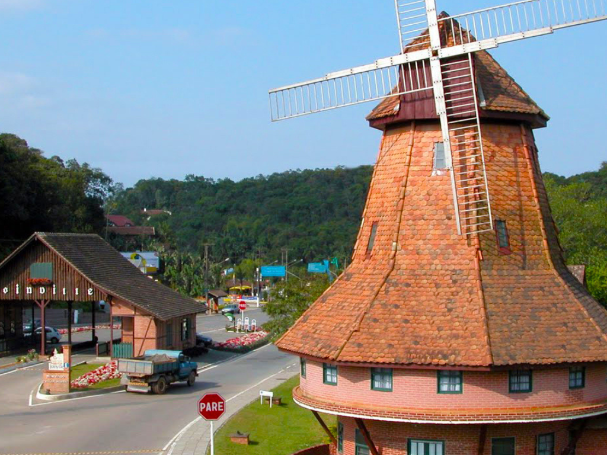

O Santa Catarina é um estado da região Sul do Brasil conhecido por sua qualidade de vida, forte economia e belas paisagens naturais que combinam praias, montanhas e áreas de preservação. Sua capital, Florianópolis, é famosa por suas praias e pela cultura vibrante, enquanto cidades como Joinville e Blumenau se destacam pela influência europeia e pelo desenvolvimento industrial. O estado também é conhecido por eventos tradicionais como a Oktoberfest de Blumenau e por sua culinária variada, com forte presença de frutos do mar. A economia catarinense é diversificada, com destaque para a indústria, tecnologia, turismo e agropecuária.
